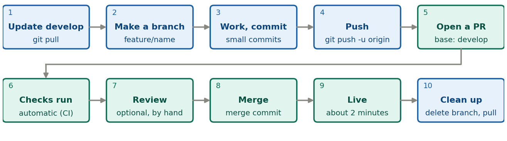
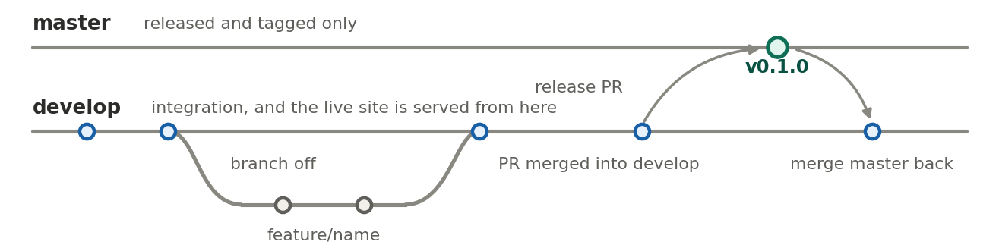

A pull request (PR) is a page on GitHub that says
“please merge branch X into branch Y”. It shows the changes, runs the
automatic checks, and keeps the discussion in one place. Nothing
reaches develop until you press Merge.
develop is where work lands and what the live site is
served from; master holds tagged releases only.

The loop for every change. Blue: on your computer. Teal: on GitHub. A check turns red? Fix it on the same branch and push again; the PR updates.
git switch develop && git pull # 1 start from the latest develop
git switch -c feature/my-change # 2 your branch
git add <files> && git commit -m "What and why" # 3 small commits; update CHANGELOG.md
git push -u origin feature/my-change # 4
gh pr create --base develop --fill # 5 or "Compare & pull request" on GitHub
# 6-9: checks run, optional review, press Merge (merge commit), the site updates
git switch develop && git pull && git branch -d feature/my-change # 10
Branches over time. A feature merges into develop through a PR. A release goes to master, is tagged, and master is merged back.
Making a release, when there is something to
version: branch release/X.Y.Z from develop,
set VERSION and date CHANGELOG.md, open a PR
into master and merge it, tag vX.Y.Z on the
merge commit, merge master back into develop,
publish the GitHub release, delete the branch. Bump
major for a breaking library change (not while 0.x),
minor for a new capability, patch for
fixes and content. A guide or site fix is an ordinary feature PR. A
hotfix is only for a bug in a released version.
Special cases. A student note: the PR into
develop runs the check only, and nothing is visible; you
replace TBD with an S-number and merge, the bot builds the
page, and it is live in 2 to 3 minutes (delete the source file to remove
a note). A contributor such as Kitty: they open a PR into
develop, you are requested automatically, and you add other
reviewers by hand. An AI agent: may open PRs, and never merges
without your go-ahead.
Never commit directly to master or
develop, and never force-push (the rulesets block
both).
Details are in the repository: RELEASING.md,
AGENTS.md, CHANGELOG.md.